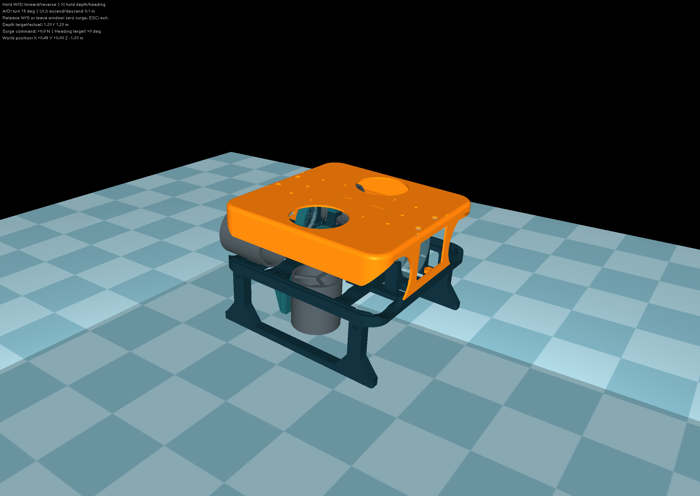

MuJoCo simulation and keyboard driving
Engine: MuJoCo 4.0.1. For the complete timing, sensor, current/tether, actuator, calibration and Gymnasium interfaces, start with the simulation foundation.
A four-thruster rigid-body demonstrator tied to the CAD coordinates. CAD meshes supply appearance; separate proxies supply simplified collision. Neither is a CFD model.
Installation and launch
From the repository root, use Python 3.12:
python3 -m venv .venv
source .venv/bin/activate
python -m pip install -r requirements/sim.txt
python simulation/mujoco/verify.py
python simulation/mujoco/run.py --viewer --manual --seconds 300
Windows activation: .venv\Scripts\activate. On macOS, open launch-macos.command after installing dependencies, or run python simulation/mujoco/launch_macos.py --manual --seconds 300. Manual driving uses a dedicated GLFW window on the ordinary Python main thread and bypasses the native viewer's letter-key shortcuts.
Without --manual, run.py executes an automatic depth, surge and heading sequence. For the automatic native viewer on macOS, use python simulation/mujoco/launch_macos.py --seconds 120, or mjpython simulation/mujoco/run.py --viewer --seconds 120. The launcher repairs a missing virtual-environment libpython link when required; system Python is unchanged.
If Library not loaded: @executable_path/../lib/libpython3.12.dylib occurs, use the launcher. This is a known mjpython/uv virtual-environment path issue, not failed CAD loading. Official issue.
Configurations
Default --configuration base loads simple_rov.xml, without top foam/straps, envelope 213 × 210 × 148 mm. The optional model is simple_rov_with_buoyancy.xml, height 184.7 mm:
python simulation/mujoco/run.py --viewer --manual --configuration with-buoyancy --seconds 120
The Python equivalents are ROV(configuration="base") and ROV(configuration="with-buoyancy"). The selection changes appearance and associated collision proxies. It does not derive mass, inertia, CG, CB, displacement or drag from the assembly. Both share explicit assumptions pending physical calibration; see buoyancy.
Driving
Click the window to give it keyboard focus.
| Input | Behavior |
|---|---|
| Hold W / S | +2 / -2 N total surge force; release returns the command to zero |
| A / D | Adjust heading target left / right by 15° per press |
| U / J | Adjust target depth up / down by 0.1 m per press |
| X | Cancel surge and hold the current depth and heading |
| Left mouse drag / wheel | Orbit / zoom |
| Esc | Close the window |
Loss of focus cancels surge; coasting may continue. Heading/depth targets persist after releasing A/D/U/J. X does not hold horizontal position or instantly brake. Sway and pitch are not independent commands. Depth targets are limited to 0.35-2.5 m to stay submerged and away from the modeled floor. The camera follows the vehicle; watch tiles and X/Y coordinates to see motion.
No gamepad integration or onboard firmware is included.
Outputs
python simulation/mujoco/run.py --render --output-dir runs/demo
Automatic recording writes demo.mp4, demo_states.csv, simulation.png and front-camera.png. Manual runs write manual_states.csv; automatic viewer runs write viewer_states.csv. Every run also writes run_metadata.json with the resolved parameters, feedback mode, seed and source hashes. Omit --output-dir for a UTC timestamp directory under runs/.

Python control interface
from simulation.mujoco.environment import ROV
rov = ROV(configuration="base")
# Body-axis commands: surge N, heave N, roll Nm, yaw Nm
forces = rov.allocate(surge_N=2, heave_N=0, roll_Nm=0, yaw_Nm=0)
rov.step(forces)
# Classical controller: target depth m, surge N, heading rad
forces = rov.controller(depth=1.2, surge_N=2, yaw=0.5)
position, rpy, velocity, angular_velocity = rov.step(forces)
step accepts nominal actuator force targets in newtons, ordered H_LEFT, H_RIGHT, V_LEFT, V_RIGHT, not PWM or RPM. X is forward, Y left, Z up; depth is -z. Positive vertical force is upward. Actual propeller handedness and ESC commands must be mapped to these signs by submerged calibration.
ACTUATOR_MAP.json records the 6 × 4 wrench matrix and reference points. Controlled rows are Fx/Fz/Mx/Mz, rank four. Pitch and sway remain passive/coupled axes. The ideal front_camera represents the upright image after rotating the physically inverted camera image 180°; there is no refraction, turbidity, scattering, lens distortion or estimation model.
Water model and assumptions
Run through run.py or the ROV class. Buoyancy, drag and motor lag live in environment.py; a generic XML viewer omits these Python forces.
config.json exposes the assumed_ parameters: 1.4 kg mass, CG Z = 5 mm, CB Z = 35 mm, inertia, displacement, linear/quadratic translational and angular drag, 0.12 s motor lag and reaction torque. The assumed volume gives 1% positive buoyancy at 997 kg/m³; this is not a CAD/material measurement.
The 20.59 N forward limit uses the supplier's maximum-thrust reference; reverse 10 N is an assumed placeholder. Measure continuous forward/reverse thrust curves, deadband, saturation and response before claiming physical performance.
The environment assumes fully submerged still water, away from the surface. Configurable currents, a tension-only lumped tether and actuator outages are available. The default analytic model omits added mass; an optional native ellipsoid fluid model is available for comparison. Native fluid drag and explicit analytic drag are mutually exclusive. The full CAD envelope must stay below the configured surface-clearance boundary. There is no free surface, water entry/exit, waves, thruster interaction, distributed cable or CFD. Changing density alone does not simulate an ocean.
Classical control and later learning
The controller uses configurable depth PI/velocity damping and roll/heading feedback, with net-buoyancy feedforward and conditional integral accumulation. Surge is a force command, not closed-loop speed control. The normal runner uses sampled sensor proxies at 50 Hz; --feedback truth selects the ideal diagnostic baseline. Establish physical trim/thrust calibration before policy deployment.
A tested Gymnasium 1.4.0 depth/heading environment now exposes four normalized actions and 13 bounded sensor-derived features, with seeded domain randomization, reward, task boundaries and time limits. Install requirements/rl.txt; see the learning interface. No training algorithm or trained policy is included.
References: Gymnasium custom environments, SB3 evaluation guidance.
Rebuild and verification
python simulation/mujoco/build_model.py
python simulation/mujoco/verify.py
python simulation/mujoco/verify_manual.py
python simulation/mujoco/verify_driving_window.py
The last command requires a local desktop/OpenGL window. Checks cover actual XML force/torque against the CAD map, rank, movement signs, depth hold/steps, roll recovery, assembly visibility and finite state. Manual checks cover six directional target changes, release/focus behavior and target limits. The window test calls callbacks and checks its framebuffer; it does not inject OS keyboard events.
Reports record source hashes. Passing means the software is consistent under the stated assumptions; it does not establish sealing, strength, depth or real control performance. Recalibrate with physical measurements and repeat the same checks.
MuJoCo XML reference · ArduSub frame reference · Physical prototype plan.